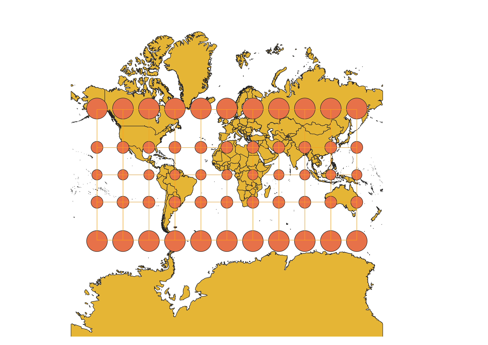
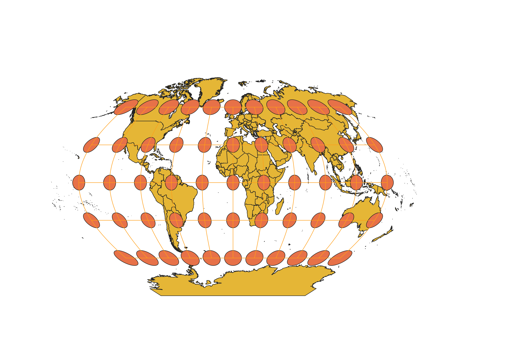
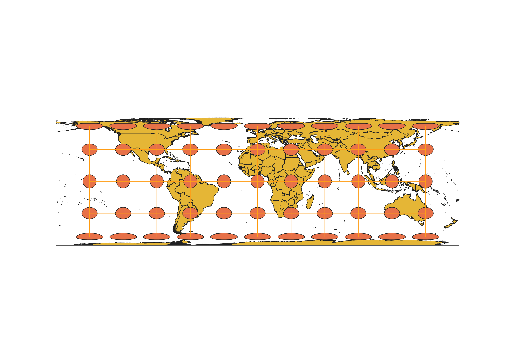
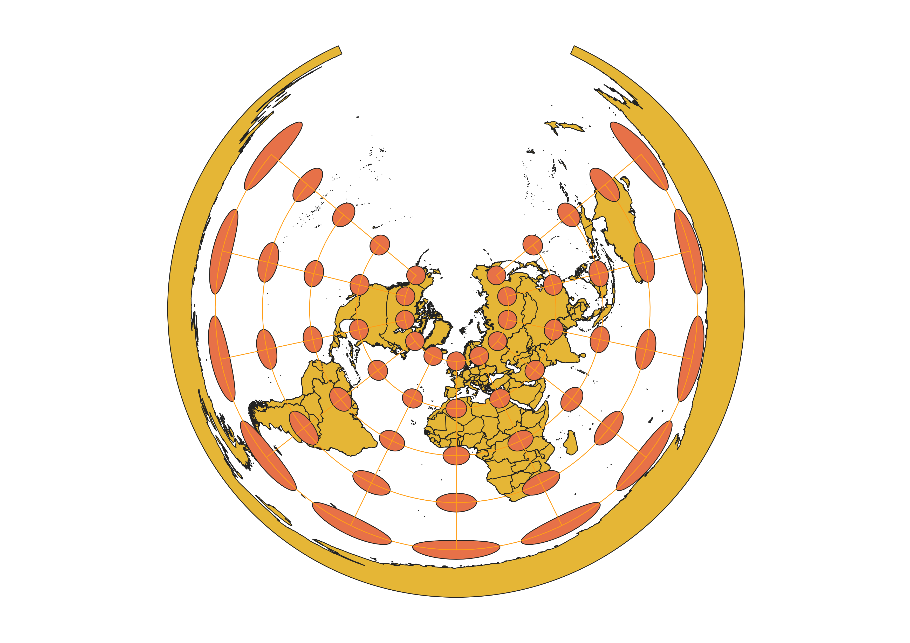
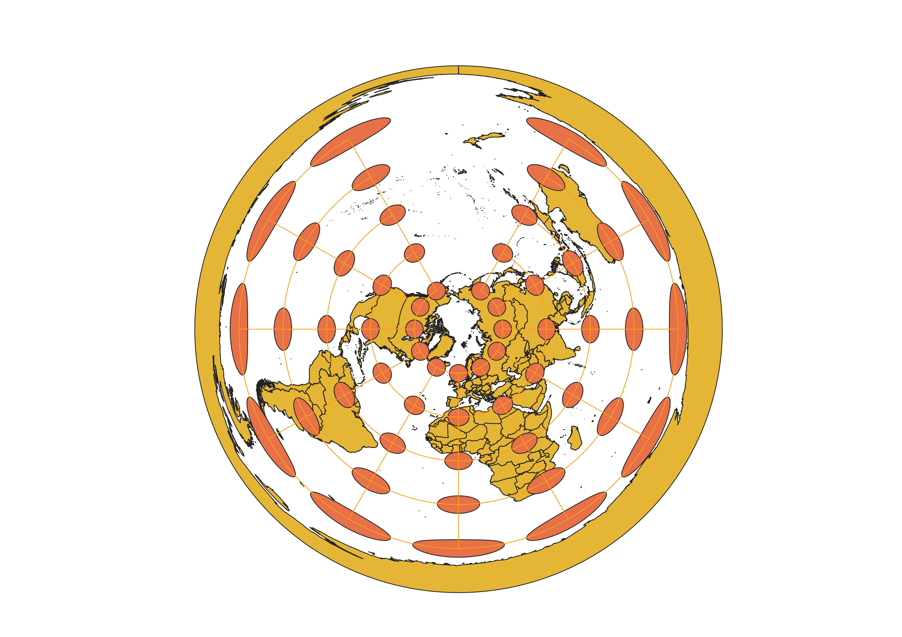
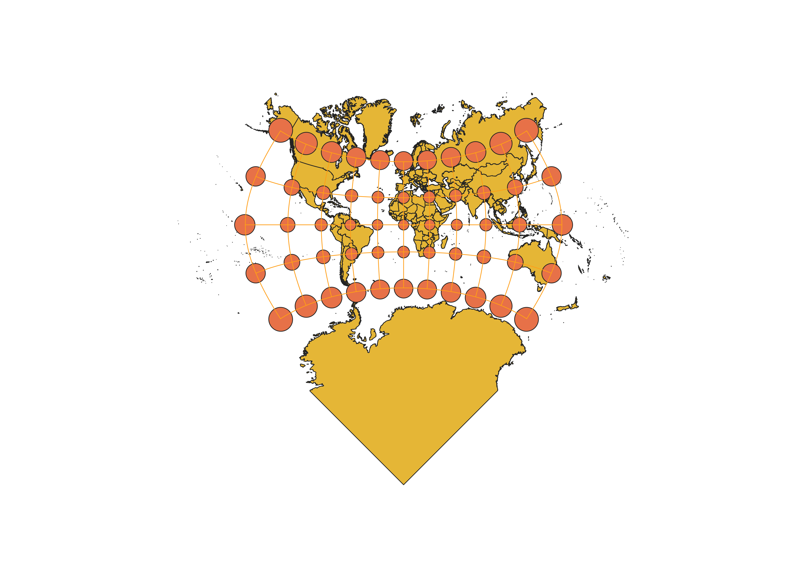
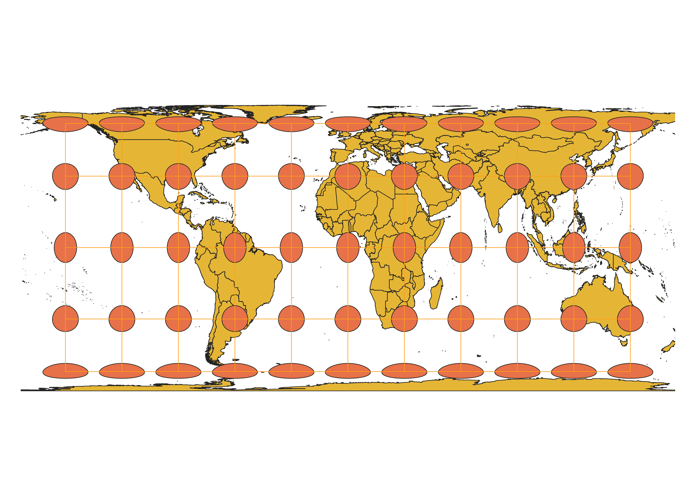

In this project I learned how to display images in different projections
Describe in your own words how you displayed the map in different projections using QGIS
Changing the type of projection I used drastically affected how the map is shown. Each projection displays the world differently and thus with different distortions.
WGS84 Projection
This depicts the world as a "normal" flat map. This is what you would typically see if you purchased a map poster, or just looked at a general map.

Aitoff Projection
This projection shows the world with better consideration for the shape of the globe (i.e., ellipse). The middle of the map (i.e., prime meridian and equator) are the not as distorted as the extremes of the map.

Now, you should add the following projections on your own:
EPSG: 3857, 53018, 54034, 54027, 102016, and two additional projections that you choose.
Pseudo Mercator
This map becomes more distorted at the latitudinal extremes (i.e., 90 degrees north and south).

Sphere Winkel
This projection is most similar to Aitofff, but a bit less distorted and is more compact.

World Cylindrical Equal Area
This map is extremely distorted around the latidudinal extremes (i.e., 90 degrees N and S)

World Equidistant Conic
This map depicts the world if you were looking dfirectly down at the north pole. Becomes extremely distorted at south latitudes.

North Pole Azimuthal Equidistant
Very similar to world equidistant conic, but somehow more distorted at southern latitudes.

WGS 1984 Adams Square II
I thought this projection was extremely bizzare. Somewhat similar to Pseudo Mercator, but arranges the map in a square shape (which is why Antartica looks like that).

World Berhmann
I also thought this projection was strange. It is distorted at the equator and at the latitudinal extremes, but not distorted between the equator and the extremes.

Data used for this project
Download Natrual Earth 1:10m Cultural Vector